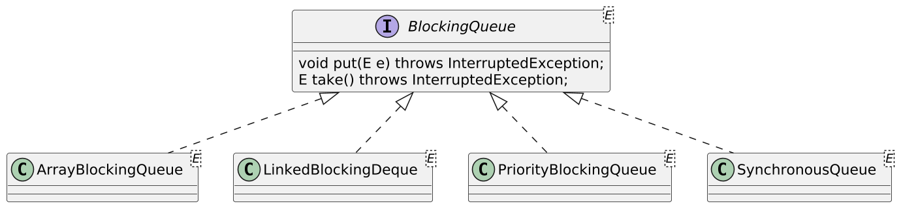
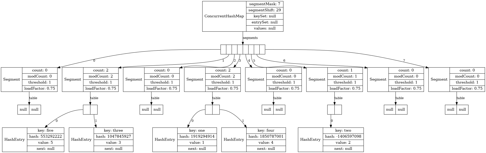
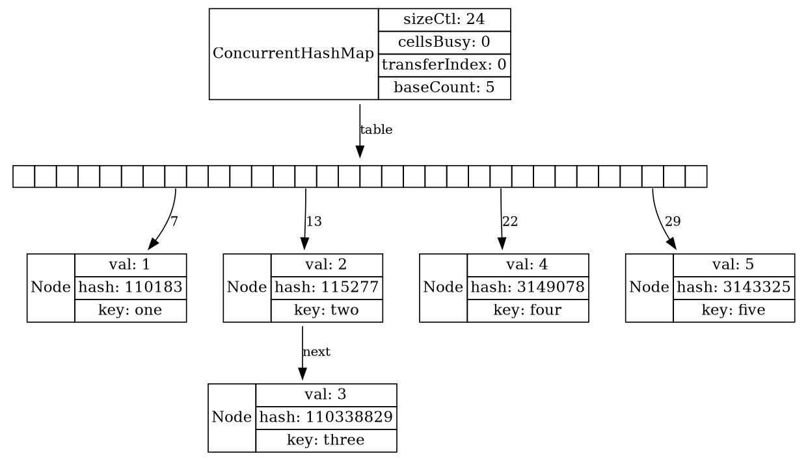
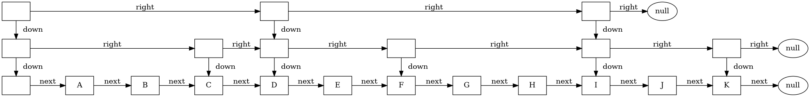
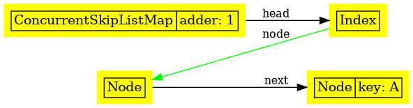
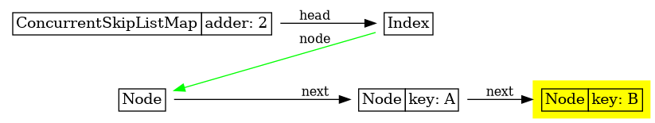
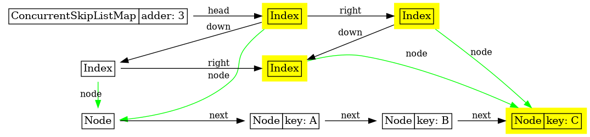
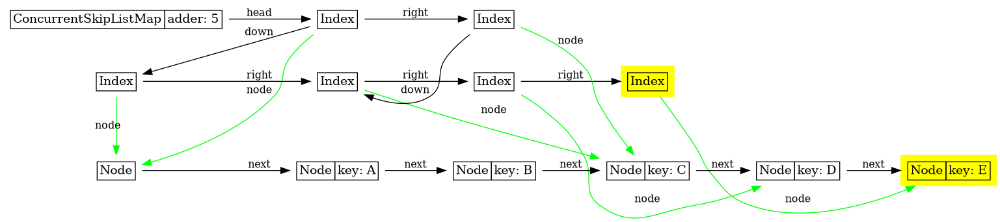
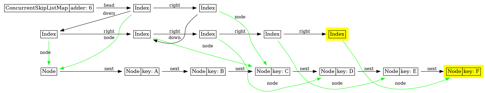
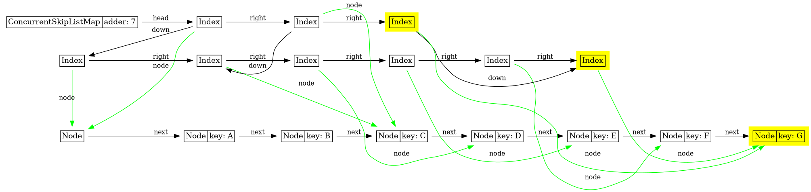

getAndSet(newValue) compareAndSet(expect, update)
incrementAndGet() decrementAndGet()
getAndIncrement() getAndDecrement()
getAndAdd(delta) addAndGet(delta)
getAndUpdate(updateFunction)
updateAndGet(updateFunction)
getAndAccumulate(x, accumulatorBiFunction)
accumulateAndGet(x, accumulatorBiFunction)Core Java. Лекция 11
Java Concurrency (окончание). Annotations
@inponomarev
Иван Пономарёв, КУРС/МФТИ
Часть 3. Потокобезопасные структуры данных

Неблокирующие алгоритмы
Блокировка (через
synchronizedилиReentrantLock) решает вопрос координации действий разных тредов с переменной.Но если много тредов конкурируют за блокировку (high lock contention), затраты ресурсов на координацию тредов становятся значительными.
Альтернативой являются неблокирующие алгоритмы, использующие поддержку специальных атомарных машинных инструкций (compare-and-swap).
В Java-библиотеке доступны классы атомарных переменных и потокобезопасные коллекции, реализованные в том числе на неблокирующих алгоритмах.
Atomics
package java.util.concurrent.atomicAtomicBoolean,AtomicInteger,AtomicLong,AtomicReference.AtomicIntegerArray,AtomicLongArray,AtomicReferenceArray.
Могут быть использованы как «улучшенные volatile-переменные», т. к. результат вызова
set(…)виден другим тредам при вызовеget(…)Поддерживают атомарные операции.
Aтомарные операции в классах атомарных переменных
Потокобезопасные коллекции
В ранних версиях Java можно было «сделать» коллекцию потокобезопасной, обернув в
Collections.synchronizedXXX(…). Это сериализовывало любой доступ к внутреннему состоянию коллекции. Из-за поддержки обратной совместимости сейчас так тоже можно, но не нужно.Цена такого решения — плохой параллелизм: конкуренция за блокировку (lock contention).
С версии 5 появились классы, специально разработанные для потокобезопасности, с меньшим количеством блокировок.
Их использование является предпочтительным.
CopyOnWriteArrayList и CopyOnWriteArraySet
class CopyOnWriteArrayList<E> implements List<E>
class CopyOnWriteArraySet<E> extends AbstractSet<E>Структуры данных на основе массива.
Пересоздают всё заново при каждой модификации.
Это дорого, зато все читающие итераторы стабильны.
Хороши, когда на одну операцию записи приходится много операций чтения.
ConcurrentLinkedQueue/Deque
ConcurrentLinkedQueue<E> extends AbstractQueue<E>
implements Queue<E>
ConcurrentLinkedDeque<E> extends AbstractCollection<E>
implements Deque<E>Основаны на неблокирующем алгоритме (CAS-операции)
poll()вернётnull, если очередь пустаПод капотом — связные/двусвязные списки
ConcurrentLinkedQueue/Deque


Блокирующие очереди: средство реализации producer-consumer pattern

Могут быть ограничены по размеру (capacity constrained).
Методы
put()иtake()ждут, пока не появится возможность положить или взять элемент.PriorityBlockingQueueне лимитируется по capacity.SynchronousQueueне имеет capacity вовсе, передаёт элементы обрабатывающим тредам напрямую.
ConcurrentHashMap
class ConcurrentHashMap<K,V> extends AbstractMap<K,V>
implements ConcurrentMap<K,V>Замена
HashMapпри разделённом доступе к данным.Не блокируется при чтении и редко блокируется при записи.
Не позволяет использовать
nullв качестве ключа или значения.Полезные методы атомарны:
putIfAbsent(key, value)remove(key, value)replace(key, oldValue, newValue)
ConcurrentHashMap: Java 7-

ConcurrentHashMap: Java 8+

ConcurrentSkipListMap
class ConcurrentSkipListMap<K,V> extends AbstractMap<K,V>
implements ConcurrentNavigableMap<K,V>Замена
TreeMapпри разделённом доступе к данным.Не позволяет использовать
nullв качестве ключа или значения.Имеет атомарные методы.
ConcurrentSkipListMap: идея

ConcurrentSkipListMap

ConcurrentSkipListMap

ConcurrentSkipListMap

ConcurrentSkipListMap

ConcurrentSkipListMap

ConcurrentSkipListMap

ConcurrentSkipListMap

ConcurrentSkipListMap

Часть 4. Executor Framework
Executor Framework
Тред — дорогой ресурс, поэтому мы хотим:
ограничивать количество наших тредов, чтобы не устроить Out of Memory,
переиспользовать имеющиеся треды, подавая им новые задачи после завершения старых,
но если какой-то тред «вылетел» — автоматически создавать новый.
В стандартной библиотеке для этого есть Thread Pools, не надо ничего делать самостоятельно.
Никто не использует Thread API напрямую.
Executor Framework
//Абстракция вычислительной задачи, возвращающей результат
public interface Callable<V> {
V call() throws Exception;
}
//Абстракция «менджера тредов»
public interface ExecutorService {
<T> Future<T> submit(Callable<T> task);
/*...есть и много другого, речь впереди...*/
}Future
//Абстракция результата "in progress", который можно ждать,
//а можно и отменить
public interface Future<V> {
V get() throws InterruptedException, ExecutionException;
V get(long timeout, TimeUnit unit)
throws InterruptedException, ExecutionException, TimeoutException;
boolean cancel(boolean mayInterruptIfRunning);
boolean isDone();
boolean isCancelled();
}Task, Executor, Future

Как создать ExecutorService?
public class Executors {
//фиксированный размер пула
public static ExecutorService newFixedThreadPool(int nThreads)
public static ExecutorService newSingleThreadExecutor()
//пул растёт по необходимости, держит неактивный тред 60 секунд
public static ExecutorService newCachedThreadPool()
//позволяет выполнять задачи с задержкой или периодичностью
public static
ScheduledExecutorService newScheduledThreadPool(int corePoolSize)
//запускает виртуальный поток под каждую из задач
public static ExecutorService newVirtualThreadPerTaskExecutor()
...
}Обработка задач «пачками»
//Запускаем и ждём, пока все выполнятся
//List<Future<T>>, а не List<T>, т. к. возможны исключения
<T> List<Future<T>> invokeAll(
Collection<? extends Callable<T>> tasks)
throws InterruptedException
//Запускаем, возвращаем первый успешный результат,
//отменяем остальные
<T> T invokeAny(Collection<? extends Callable<T>> tasks)
throws InterruptedException, ExecutionException;Отмена задач и «прекращение обслуживания»
//отменить задачу, если она ещё не начала выполняться
future.cancel(false)
//запросить прерывание задачи (подробности впереди)
future.cancel(true)
//Запретить приём новых задач
executorService.shutdown();
//Подождать, пока принятые задачи завершатся
if (!service.awaitTermination(10, TimeUnit.SECONDS)){
//Прервать выполнение задач
service.shutdownNow();
}Прерывание задач
В ранних версиях Java существовали (ныне deprecated) методы принудительной остановки и приостановки/возобновления тредов, но это оказалось плохой идеей:
нет гарантий, что тред не остановится посередине атомарной операции.
приостановка может на неопределённое время "завесить" блокировку
В итоге, имеется кооперативный механизм прерывания.
Прерывание тредов
ExecutorService.shutdownNow()вызывает методThread.interrupt()на потоках выполнения.метод
Thread.isInterrupted()возвращает статус прерывания треда.JMM Interruption Rule: вызов метода
interrupt()внешним потоком happens-before прерываемый поток узнаёт о том, что он прерван.
Кооперативный механизм прерывания
Если вычисления в цикле, тред обязан периодически проверять статус
Thread.currentThread().isInterrupted()и, если флаг выставлен, записав в лог факт прерывания, выходить из метода.На ждущих методах может быть выброшен
InterruptedException. Что с ним делать?
Что делать с InterruptedException
Если контекст позволяет, его всегда следует пробрасывать выше (декларируя в
throws).Если выше пробрасывать нельзя (например, мы находимся в методе
runинтерфейсаRunnable), то:
} catch (InterruptedException e) {
//записываем факт прерывания в лог ...
...
//восстанавливаем interrupted-статус
Thread.currentThread().interrupt();
//выходим из прерванной процедуры
return;
}Просто так "проглатывать"
InterruptedExceptionни в коем случае нельзя!Рекомендуется записывать факт прерывания в лог, для прозрачности отладки.
CompletableFuture
Появились в Java 8, расширяют
Future.Позволяют явно задать результат (отсюда 'Completable') и собрать цепочку асинхронных вычислений.
Могут быть использованы так:
CompletableFuture<Integer> f = new CompletableFuture<>();
executor.execute(() -> {
int n = workHard(arg);
f.complete(n); });
executor.execute(() -> {
int n = workSmart(arg);
f.complete(n); });
executor.execute(() -> {
Throwable t = ...;
f.completeExceptionally(t); });Композиция CompletableFuture с действием
Method | Parameter | Description |
| T→U | Apply a function to the result. |
| T→void | Like |
| T→CompletableFuture<U> | Invoke the function on the result and execute the returned future. |
| (T, Throwable) → U | Process the result or error and yield a new result. |
| (T, Throwable) → void | Like |
Композиция CompletableFuture с действием
Method | Parameter | Description |
| T, long, TimeUnit | Yield the given value as the result in case of timeout (Java 9+) |
| long, TimeUnit | Throw `TimeoutException ` in case of timeout (Java 9+) |
| Runnable | Execute the |
Композиция нескольких CompletableFuture
Method | Parameter | Description |
| ComletableFuture<U>, | Execute both and combine the results with the given function. |
| ComletableFuture<U>, | Like |
| CompletableFuture<?>, | Execute the runnable after both complete. |
Композиция нескольких CompletableFuture
Method | Parameter | Description |
| CompletableFuture<T>, | When a result is available from one or the other, pass it to the given function. |
| CompletableFuture<T>, | Like |
| CompletableFuture<?>, | Execute the runnable after one or the other completes. |
| CompletableFuture<?>… | Complete with |
| CompletableFuture<?>… | Complete after any of the given futures completes, with the same result cast to |
Если этого показалось мало…
Каждый из этих методов имеет вариант с постфиксом
Async(например,thenApplyAsync), позволяющий выполнить дополнительное действие в другом треде заданного Executor-a.
Мы только прошлись по основам
 |
|
Code Review Checklist
Roman Leventov: Code Review Checklist: Java Concurrency
Порядка 100 пунктов, по которым можно проверить concurrency код на распространённые ошибки
Благодарности
Эти люди дали свой фидбэк и помогли улучшить материал этой лекции:
@2caco3 @asm0dey @dolzhenko @DrEdwardHyde
@dyer_the @krems5 @LordOfBoredom
@miha_x64 @vaddyacom @vdimir
(все ошибки и неточности — мои)
Иногда при чтении кода начинает рябить в глазах…
import org.json.JSONObject;
class NaivePersonSerializer {
String toJSON(Person person) {
JSONObject result = new JSONObject();
result.put("firstName", person.getFirstName());
result.put("lastName", person.getLastName());
result.put("birthDate",
person.getBirthDate()
.format(DateTimeFormatter.ISO_LOCAL_DATE));
result.put(...)
result.put(...)
//ещё 20 полей
result.put(...)
return result.toString();
}
}Возникает ощущение, что что-то не так…
public class NaiveController {
private final Service service;
public void executeCommand(String command) {
switch (command) {
case "foo":
service.foo(); break;
case "bar":
service.bar(); break;
case ...
//Ещё 15 веток...
case "help":
default:
service.help(); break;
}
}
}Coupling & Cohesion
Coupling: the degree of interdependence between software modules; a measure of how closely connected two routines or modules are; the strength of the relationships between modules.
Cohesion refers to the degree to which the elements inside a module belong together.
Low coupling often correlates with high cohesion, and vice versa.
Coupling vs. Cohesion

Вопросы
За счёт чего в приведённых примерах high coupling + low cohesion?
Чем это опасно для проекта?
Как бы мы хотели решить эту проблему?
//Помечаем то, что хотим сериализовывать, не сериализуем по умолчанию.
//Вариант: наоборот, помечать то, что сериализовывать не хотим.
public class Person {
@Published
private final String firstName;
@Published
private final String lastName;
@Published
private final LocalDate birthDate;
//...сколько угодно ещё полей
}
//Как вариант...
JsonSerializer<Person> ser = new JsonSerializer<>(Person.class);
JSONObject json = ser.serialize(p);Контроллер
public class Controller {
private final Service service;
@Command("foo")
void doSomething() { service.foo(); }
@Command("bar")
void bar() { service.bar(); }
//ещё 15 команд
@Command() //дефолтная
void help() { service.help(); }
}
new CommandDispatcher(new Controller(srv)).executeCommand("foo");Аннотации
Аннотация — способ разметки кода на Java, через добавление метаинформации к различным элементам программы на Java.
Работают приблизительно как модификаторы (
public,static), но существует развитый механизм создания собственных аннотаций.Могут быть обработаны на трёх этапах:
на этапе кодогенерации перед компиляцией (annotation processing, Language Model API),
на этапе инструментации байт-кода (Instrumentation API),
на этапе выполнения кода (через Reflection API).
Синтаксис определения аннотаций
modifiers @interface AnnotationName {
type elementName();
...
type elementName default value;
}Пример
public @interface BugReport {
String assignedTo() default "";
int severity();
}Annotation Interfaces
Подобно тому, как
enum-классы — это специальный вид классов, annotation-интерфейсы — это специальный вид интерфейсов.Наследуются от
java.lang.annotation.Annotation.Нельзя расширять наследованием, нельзя параметризовать через generics.
Методы не могут иметь параметров.
Допустимые типы методов аннотации (JLS 9.6.1)
Примитивы (
int,short,long,byte,char,double,float,boolean),enum-ы,
String,Class(с возможным ограничителем параметра, вродеClass<? extends MyClass>),другие аннотации,
массивы из вышеперечисленного (но не массивы массивов).
Пример определения интерфейса аннотации
public @interface BugReport {
//вложенные типы допустимы!
enum Status {UNCONFIRMED, CONFIRMED, FIXED, NOTABUG}
boolean showStopper() default false;
String assignedTo() default "";
//метакласс, речь впереди
Class<?> testCase() default Void.class;
Status status() default Status.UNCONFIRMED;
//Тип аннотации. При конструировании используется синтаксис
//аннотации, речь впереди
Reference ref() default @Reference(id = "");
String[] reportedBy();
}Использование аннотаций
@AnnotationName(elementName1=value1, elementName2=value2,...) @AnnotationName(singleValue) @AnnotationName //no values, no parens
Использование аннотаций
@BugReport(assignedTo="Harry", severity=10)
//порядок не имеет значения
@BugReport(severity=10, assignedTo="Harry")
//если заданы значения по умолчанию, то можно пропускать
@BugReport(severity=10)
//если параметров нет или все имеют умолчания,
//то можно не ставить скобки
@BugReport
//Если на параметр не задан default, его надо обязательно определять
//(иначе ошибка компиляции).Single-value annotations
public @interface ActionListenerFor {
String value();
int priority() default 0;
}
//использование
@ActionListenerFor("yellowButton")
//что эквивалентно
@ActionListenerFor(value = "yellowButton")
//в то же время:
@ActionListenerFor(value = "yellowButton", priority = 1)Массивы и другие аннотации
//Массивы задаются в фигурных скобках
@BugReport(..., reportedBy = {"Harry", "Carl"})
//То же самое, что {"Harry"}
@BugReport(..., reportedBy = "Harry")
//Конструирование вложенных аннотаций
@BugReport(..., ref = @Reference(id = "12345"))
//...Как видим, используя разрешённые типы,
//можно задать сколь угодно сложную структуру данныхЗначение аннотации не может быть установлено в null. Не допускатся null даже в default-значениях. |